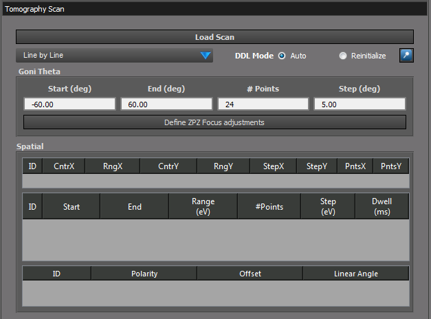
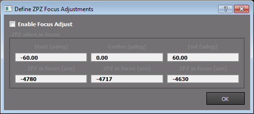
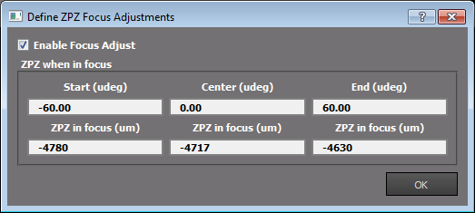

pyStxm 3.00 Manual
User Interface
Introduction
Configuration
Tools
Scan Plugins
How to do ROI Selections for scans
Detector Scan
OSA Scan
OSA Focus Scan
Coarse Image Scan
Coarse Goni Scan
Fine Image Scan
Tomography Scan
Sample Focus Scan
Point Scan
Line Scan
Positioner Scan
Data
Preferences
Status Bar
Devices
Information
Trouble Shooting
Developers Guide
RST Examples
pyStxm 3.00 Manual
Scan Plugins
Tomography Scan
View page source
Tomography Scan



